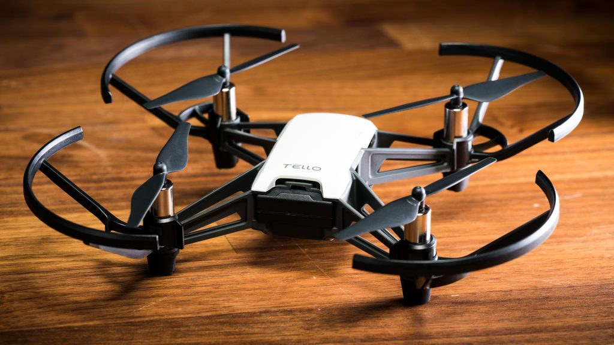
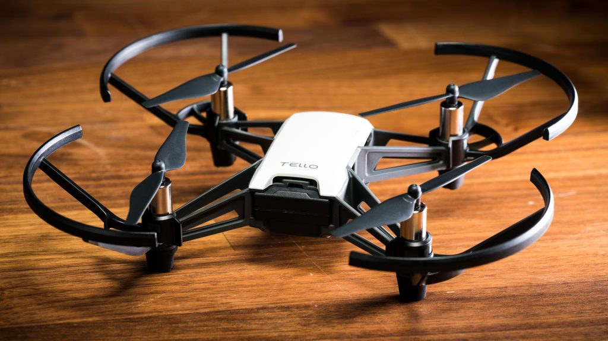

Project Overview
This project presents a vision-based object detection and tracking system that utilizes a Tello drone to track an iRobot as the target object. The system incorporates a custom-trained YOLOv5 deep learning model for accurate object detection in real-time, as well as a combination of centroid tracking and PID control algorithms to manage the drone's movement. The drone autonomously maintains a safe distance from the iRobot while following it through various environments.
Video Demonstration
Motivation and Project Applications
The motivation behind this project is the increasing need for efficient, versatile, and accurate object detection and tracking systems in various domains. The proposed vision-based object detection and tracking system has numerous potential applications, including surveillance, search and rescue operations, wildlife observation and research, inspection and monitoring, autonomous navigation, sports and entertainment, and retail and inventory management.
Objectives and Deliverables
This project is guided by two primary objectives:
- Implement an accurate object detection system for iRobot
- Combine the object detection system with a tracking system for accurately tracking the iRobot
The key deliverables resulting from this project include:
- Custom-trained YOLOv5 model for iRobot detection
- Integrated object detection and tracking system
- System performance evaluation using a custom dataset of iRobot images
Installation and Usage
To use this project, follow these steps:
- Clone this repository to your local machine
- Install the required dependencies using
pip install -r requirements.txt - Launch the system using
python main.py
You can also modify the system to track other objects of interest by adjusting the object detection model as needed.
 

Contributors
- Shravan Nimma
- Mounika Chintam
License
Acknowledgments
We would like to thank our project advisor and colleagues for their support and feedback throughout the development process. We also acknowledge the contributions of the YOLOv5 and OpenCV communities, whose open-source software made this project possible.